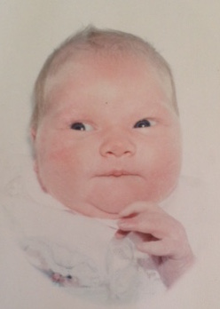
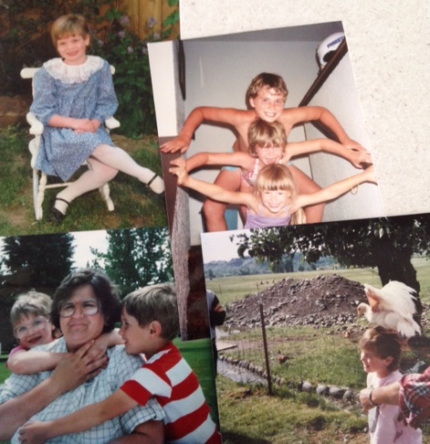

Born in the metropolitan city of Kennewick Washington it was clear from a young age that I was destined for greatness.
Like most heros I had to suffer some tragedy in order to realize my full potential. Behold, the awkward years!
I emerged from my adolescence to become a super cool teenager.
Wait no... still awkward.
Anyways I am currently honing my skills at Ada Developers Academy under the instruction of Sensei Kari, Maestro Jeremy and a team of highly trained ninja cats.